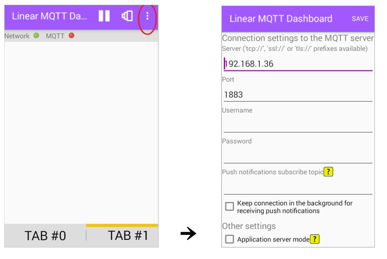
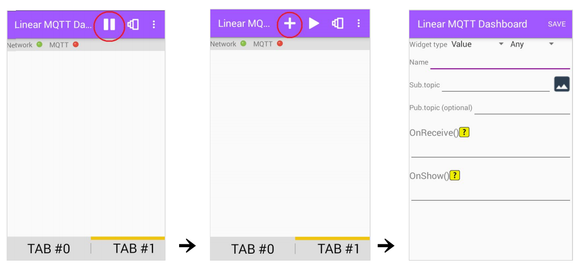
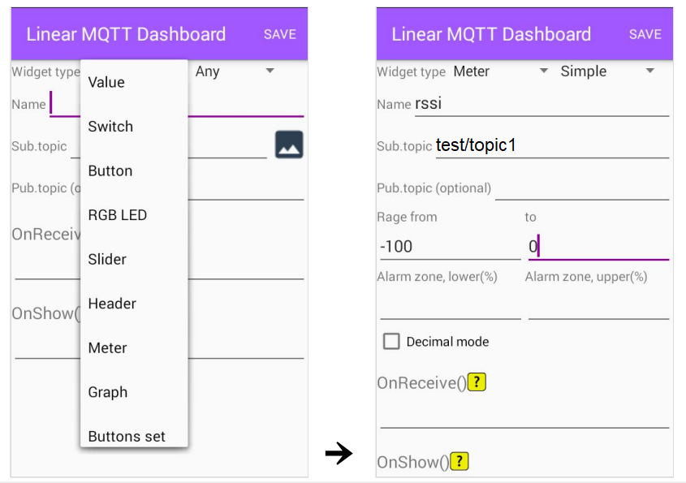
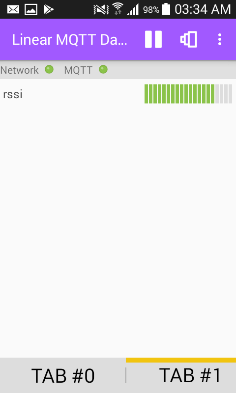
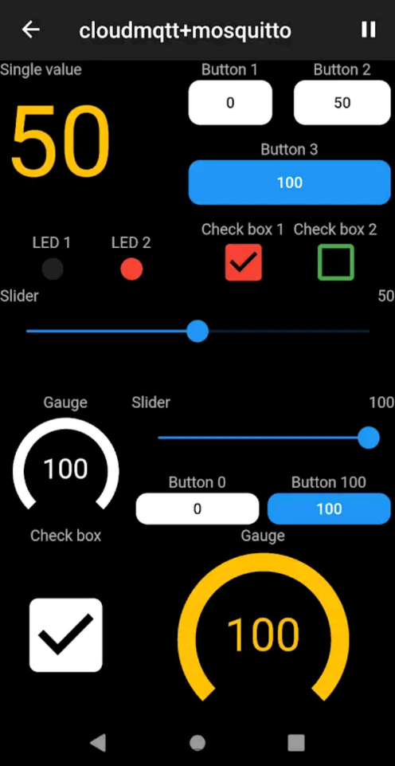
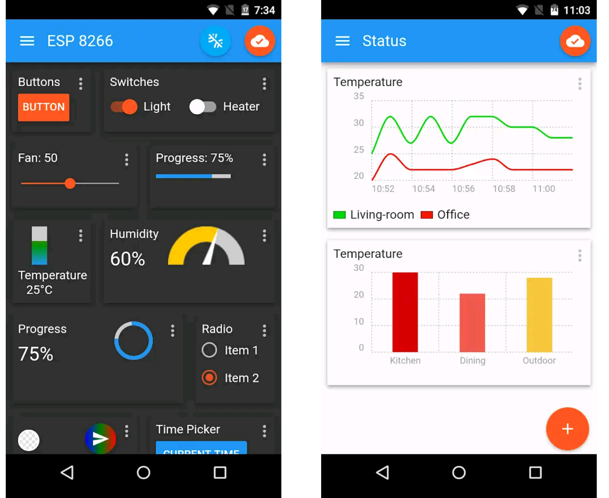
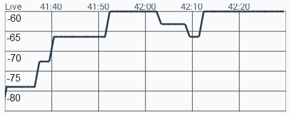

SED - MSE 2023
En primer lugar vamos a probar el protocolo MQTT con mosquitto corriendo el broker y el cliente (para suscribirse o publicar mensajes) en la misma PC.
1. Antes que nada, abra una terminal y verifique que el broker esté corriendo como servicio:
$ sudo service mosquitto status
2. Luego abra dos terminales para trabajar con dos clientes dentro de la misma PC. Una de ellas se utilizará como subscriber y la otra como publisher. En la terminal del subscriber, nos podemos suscribir al topic "test/topic1" mediante el siguiente comando:
$ mosquitto_sub -h localhost -t "test/topic1" -v
El valor localhost corresponde a la IP del broker, que en este caso es la IP 127.0.0.1 dado que el broker y los clientes estan corriendo en la misma PC. El puerto utilizado en este ejemplo es el que viene por defecto, 1883, ya que no estamos especificando otro, pero si fuera necesario especificarlo debería agregarse -p [puerto].
3. Estando el cliente subscriptor a la espera, publique un mensaje, por ejemplo "probando mqtt", dirigido al topic "test/topic1" desde la segunda terminal:
$ mosquitto_pub -h localhost -t "test/topic1" -m "probando mqtt"
Luego de esto, en la terminal subscriber debería aparecer el mensaje enviado desde el publisher.
En este ejemplo la PC se mantendrá como cliente suscriptor (además de broker) y el nodo ESP32 será el cliente publisher.
char msg[50];
Descargue la carpeta del proyecto /practica1 (disponible en el campus).
Configuración de red WiFi: Dentro del proyecto, en el archivo config.h encontrá las definiciones de SSID y password para ingresar los datos de su red inalámbrica.
/* configuración WIFI */
#define ESP_WIFI_SSID "ssid" // CONFIG_ESP_WIFI_SSID // "SSID wifi"
#define ESP_WIFI_PASS "password" // CONFIG_ESP_WIFI_PASS // "pass wifi"
Configuración de Broker: para conectar el ESP32 con el broker, deben configurarse la dirección del broker y el puerto MQTT. En el mismo archivo de configuración, reemplace la definición del broker por la que corresponda en su caso (IP de la PC donde está corriendo mosquitto). El puerto déjelo por defecto en 1883.
/* Configuracion MQTT */
#define PORT_MQTT 1883 //CONFIG_PORT_MQTT // default
#define IP_BROKER_MQTT "ip_broker" //CONFIG_IP_BROKER_MQTT // Broker MQTT
Inicialización de MQTT: en main.c, agregue la inicialización del cliente MQTT en el nodo mediante la función MQTT_init().
Publicación: vamos a publicar un mensaje periodicamente en el topic "test/topic1". El dato que vamos a usar como mensaje va a ser la lectura del nivel de potencia de la señal Wifi recibida en el nodo (RSSI). Para obtener el valor de RSSI, utilice la función de la APID WIFI_getRSSI() (tenga en cuenta que devuelve un int8_t). Este valor se deberá obtener periodicamente dentro del loop del programa. Para publicar los mensajes agregue la función MQTT_publish("test/topic1", msg), donde msg debe ser un string con el mensaje generado (lo que requiere convertir el valor de RSSI a string). Además, para agregar un retardo de 1 segundo entre publicaciones vamos a definir un delay mediante la función CRONO_delayMs(1000). Incluya también la macro para imprimir mensajes por el monitor serie, ESP_LOGI(TAG, "test/topic1, mensaje %s", msg).
Abra una terminal (si el SDK está instalado en Windows use ESP-IDF Power Shell) en el directorio de proyecto /practica1 para compilar y descargar el firmware mediante idf.py -p [puerto_PC] flash. Luego, desde la misma terminal corra idf.py -p [puerto_PC] monitor.
En la terminal de linux donde está escuchado cliente mosquitto (asegure que esté subscripto al topic "test/topic1") verifique que comienzan a recibirse los mensajes publicados por el ESP32.
Para guardar en un archivo de texto los mensajes recibidos en el cliente suscriptor de nuestra PC, se puede utilizar un script de bash para automatiar la recepción de mensajes.
Elija un directorio y desde un editor de texto cree un archivo con nombre guardar_mensajes.sh. Luego otorgue permisos de ejecución:
$ chmod +x guardar_mensajes.sh
Copie las siguientes líneas y agréguelas dentro del archivo:
##!/bin/bash
# Configuración del broker y topic a escuchar.
# Configuración inicial:
broker="localhost"
port="1883"
topic="test/topic1"
archivo="recibidos.txt"
#--------------------------------------------------
# Ponemos el cliente de mosquitto a escuchar
mosquitto_sub -t $topic -h $broker -p $port -v | while read value; do
ts=$(date "+%d/%m/%Y %H:%M:%S") # Agregamos una marca de tiempo en la variable ts (opcional).
# Guardamos valores:
echo "$ts $value" >> $archivo # guardamos datos en archivo
echo "$value" # mostramos el resultado por consola
done
A partir de este ejemplo, se podrá guardar la información de forma customizada de acuerdo con el formato deseado.
Finalmente, verificando que el nodo publisher esté emitiendo mensajes, ejecute en la terminal de la PC el script ./guardar_mensajes.sh. Déjelo algunos segundos y luego interrúmpalo para verificar si se guardaron los datos en el archivo recibidos.txt.
En el mismo código del cliente MQTT del ESP32, vamos a agregar la subscripción al broker para el topic "test/led". Para ello primero debemos configurar la subscripción mediante la función de la APID, MQTT_subscribe("test/led"), agregándola debajo de la configuración inicial de MQTT (fuera de while).
Para definir las acciones a ejecutar cada vez que el ESP32 recibe un mensaje asociado a ese topic, debemos realizar las siguientes modificaciones en el código:
En mqtt.c, la función MQTT_processTopic() permite ejecutar las acciones que correspondan en el momento que se recibe un mensaje. Defina dentro de esta función el siguiente código:
if(strcmp("test/led", topic)==0) {
printf("MQTT: Mensaje recibido: %s\n", data);
IO_toggleLed();
}
En main.c, agregar la inicialización de GIPOs (por defecto se inicializa solo el LED del ESP32):
IO_gpioInit();
Luego compile, cargue el firmware y ejecute el monitor en la consola de trabajo del ESP32. Nota: recuerde que debe chequear que el puerto GPIO asociado al LED de su Kit ESP32 (puerto 2 para NodeMCU-32S).
En otra terminal, publique el mensaje "desde el cliente PC" asociado al topic "test/led" . Publique varias veces ese mismo mensaje desde la PC y observe el estado del LED y del monitor serie. Chequee que el LED cambie de estado y el mensaje recibido se muestre correctamente en el monitor.
$ mosquitto_pub -h localhost -t "test/led" -m "desde el cliente PC"
En los ejemplos anteriores publicamos y nos subscribimos a mensajes a través de un broker corriendo en una PC conectada a nuestra red privada. Además de esto el protocolo nos permite intercambiar mensajes entre clientes conectados a redes distintas mediante la subscripción a brokers alojados en la nube, ya sea a través servidores privados o públicos. A continuación se muestra una lista de algunos brokers públicos disponibles:
| Name | Broker Address | Regular/TCP Port | Web Socket Port | Link |
|---|---|---|---|---|
| Mosquitto | test.mosquitto.org | 1883 | 80 | http://test.mosquitto.org/ |
| HiveMQ | broker.hivemq.com | 1883 | 8000 | https://www.hivemq.com/try-out/ |
En el archivo de configuración del ESP32, conifg.h modifique la dirección del broker por alguna de las indicadas en la tabla, por ejemplo test.mosquitto.org. Luego programe el nodo y corra el monitor serie.
/* Configuracion MQTT */
#define IP_BROKER_MQTT "test.mosquitto.org" // CONFIG_IP_BROKER_MQTT
Desde una terminal, publique el mensaje para prender el led, en el topic "test/led" pero para el mismo broker configurado previamente:
$ mosquitto_pub -h test.mosquitto.org -t "test/led" -m "mensaje a través de broker MQTT remoto"
Luego verifique si se recibe el mensaje en el nodo, observando el estado del LED y monitor serie cada vez que repita el mensaje publicado (preste atención al retardo producido en comparación con los ejemplos anteriores).
Existen varias aplicaciones para teléfonos móviles que funcionan como clientes MQTT. Para esta actividad nos basaremos en la app LinearMQTT. Ésta permite configurar diferentes dashboards tanto para la subscripción como para la publicación. Veamos algunos ejemplos.
Instale la app LinearMQTT en su teléfono celular (solo Android).
Vuelva a configurar la IP del broker local en el ESP32.
Una vez abierta la aplicación, vamos a configurar la conexión MQTT desde App settings, ingresando la dirección del broker local y el puerto por default (1883).

Primero presione pausa y luego abra la configuración para un nuevo Widget asociado a un topic, presionando +.

Elija el tipo de Widget. En este caso, dado que vamos a leer la señal de RSSI que enviará el nodo, elijamos el Widget Meter.
Ingrese el nombre del Widget (Name), supongamos “rssi”, el topic correspondiente (Sub.topic), "test/topic1", y el rango mínimo y máximo de nuestro Meter (cada tipo de Widget tendrá sus parámetros particulares), en este caso asumamos desde -100 hasta 0 (recordando que son dBm). Asegure que el ESP32 esté transmitiendo los valores de RSSI en el topic correspondiente. Importante: tenga en cuenta que si el Widget está asociado a mensajes numéricos, el mensaje publicado por el nodo debe ser un string solo con el valor numérico del dato que se quiere transmitir, sin texto adicional.

Una vez configurada la App, puede iniciar nuevamente la conexión a MQTT (presione play). Debería observarse algo como lo siguiente:

Como último ejemplo, agregue el Widget Buttons set y configure el topic "test/led" (Pub.topic). Agregue en Values and labels el mensaje "desde el cel" y guarde los cambios. Vuelva a iniciar con play y presione en forma reiterada el Boton agregado. Observe la respuesta del ESP32 y la salida del monitor serie.
Algunas otras Apps similares:
Nolinear MQTT

IoT MQTT Panel

Implemente un sistema que permita iniciar y apagar desde el celular la captura de datos en el ESP32. Los datos que debe publicar el nodo son el nivel de potencia RSSI cada 500 ms. Estos datos deben mostrarse en tiempo real en la App LinearMQTT (o la que elija) mediante el Widget Graph, como el que se muestra en la sigueinte figura.

Nota: si luego de configurar todos los parámetros no se observa el gráfico, pruebe reiniciando la App.
Debe utilizarse un Widtget de tipo “LED” en el mismo TAB de la App. El LED deberá prenderse cuando el nodo haya comenzado a publicar datos y apagarse cuando deje de hacerlo.
Utilizar una PC que se suscriba a los mensajes con las lecturas RSSI del nodo y guardarlos en un archivo de texto especificando en cada linea fecha/hora y valor recibido, ejemplo: RSSI: -45 [dBm] 01/03/2023 14:43:05. Procure capturar los mensajes durante al menos 2 o 3 minutos.
Debe subirse al campus (Para la tarea Entregable 1) un archivo ZIP que contenga los siguientes archivos: